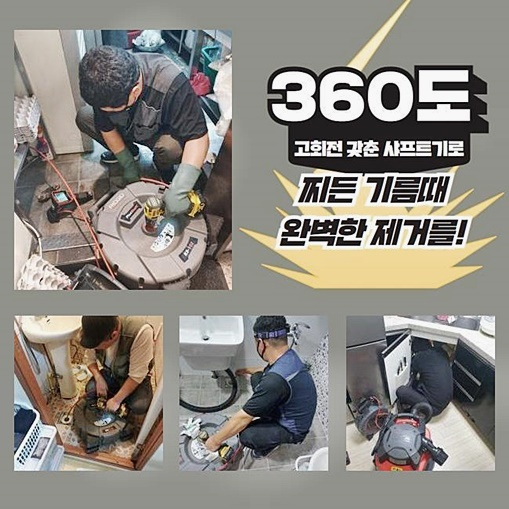
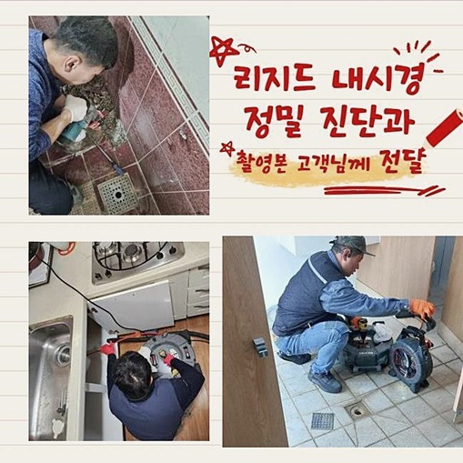
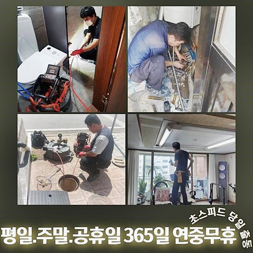
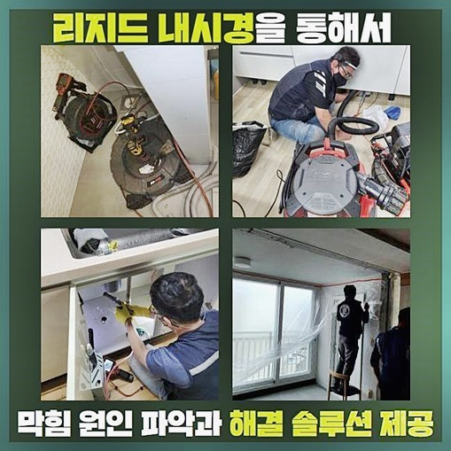
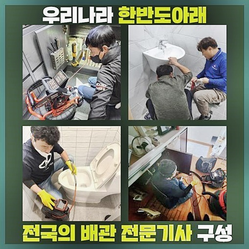
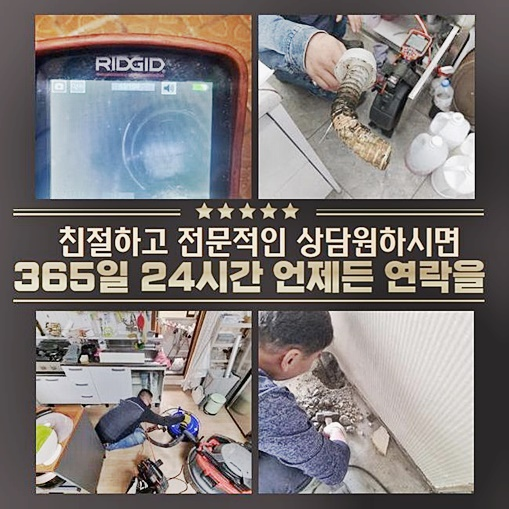

🏠 남동구 수산동하수구막힘 논현고잔동 하수구뚫는곳 출장설비
용인 남동 싱크대막힘 전문 시공 후기

📋 작업 개요
- 위치: 용인 남동, 남동, 용인
- 서비스 유형: 싱크대막힘, 하수구막힘, 배관막힘, 집수정막힘, 역류해결, 뚫는업체, 배관청소, 악취차단
- 작업 일시: 2024. 6. 20. 17:20
- 업체명: 하수구수사대 (010-5615-2118)
🔍 문제 상황
남동구 수산동하수구막힘 논현고잔동 하수구뚫는곳 출장설비
일반 생활을 영위하며 청소나 세탁을 통하여 많은 행동들에서 물이 없으면 마비가 일어날 수즌으로 수돗물을 막대하게 소비합니다
오염된 하수를 처리장으로 폐기처분 하면서 욕실의 바닥부 하수구가 막혀 배수 그레이팅에서 오히려 역행이 일어나거나 타일이 온통 하수범벅이 되는 사태까지 초래되어 상당한 불편감을 얻죠
하수구가 봉인될 경우 단순히 먹고 씻는 일도 트러블이 생기고 거꾸로 솟은 혼탁한 물웅덩이에서 퍼지는 냄새로인해 인상찌푸릴 일이 많아집니다
쉽게 처리가능한 막힘 정도면 가루나 액상 클리너나 와이어를 집어 넣는 것으로 원활하게 막힌 측면을 타개할 수는 있습니다
허나 막혀있는 쪽이 있는지 없는지 헷갈리거나 일반 도구로는 턱도 없이 까마득한 깊이일 경우는 단순 압박만으로는 해소가 한계가 보이므로 업체의 지혜를 이용하는 식으로 해소하시면 좋습니다
오늘 작성할 글은 흔한 배수 설비가 고장날 시 저희업체는 무슨 기계를 활용하고 당면한 막힘 과제를 처리해 나가는지에 대해 분명히 전달드릴게요
배수구 이슈는 머리카락과 묵은 때같은 오염원으로 인하여 트러블을 빚지요
이번에 의뢰를 주신 장소를 진단해 봤더니 한 집에서만 배수 시스템에 장애가 생긴 상황을 넘어섰습니다
전체적인 관로가 막혀서 물을 틀고 쓰려하면 역류하는 사태까지 초래되어 인접한 모든 이웃에게 극심한 고통을 주는 사태더라고요

🔎 원인 분석
💡 전문가 진단: 정밀 진단 장비를 사용하여 슬러지의 고착 여부를 판명하고 타격/세척 작업을 실시했습니다.
일단 막혀버리면 혼탁해진 하수로 인해 불쾌한 악취가 급격하게 확산되다보니 불편감을 만들어내게 되고 실내를 돌아다닐 때도 방해를 받게 됩니다
모든 호실에서 막힘이 나타난 현황이기에 일부 세대 배관이 아니고 야외의 중앙 시설물부터 맞닿은 측면의 검토가 절실하다 보였습니다
작업에 착수하게 될 파이프라인이 달린 장소를 체크해줘야 했으므로 관로 탐사용 레이더를 통하여 진단에 착수했죠
본 장비는 배관 경로에서 신호가 검출되면 경고음을 울리기에 파이프라인이 자리한 측면을 검출해야 할 순간에 가치를 발휘하는 장비예요
탐사기로 관로를 확실시 하고 나면 시공을 하기 위하여 하수구 망을 탈거했어요
배관이 정말 중단됐나 제대로 검증해야 했기에 배관 촬영기를 집수시설로 쑥 집어넣어 봤는데요
샅샅이 탐색해 보니 가지배관들과 이어진 굵은 배관 속에서 기름슬러지가 상당량 튀어나왔는데요!
일상 중에 저절로 형성되는 슬러지는 각종 오일층의 내려가지 못하고 남아있다가 밀집되는 물질입니다
부엌 싱크대에서 기름량을 많이 쓰거나 그릇을 씻으면서 산패된 기름류를 배관 속으로 붓는다면 저절로 소거되지 않고 배관에 결착하고 맙니다
이러한 나쁜 습관이 모여서 개별 가정의 범위를 넘어 다른 거주자도 빠짐 없이 불편함을 체감하는 물길이 닫혀버리고 내부가 침수되는 사건이 표면화된 것이었답니다

🔧 작업 과정
통로 차단이 확실시됐으니 이물질로 붐비는 쪽을 뚫어버리는 시공이 진행돼야합니다
접착력이 강한 슬러지를 소거해 줘야 할 때 회전력 좋은 샤프트를 주로 가동시키는 편입니다
샤프트의 파워로 배관에 말라붙은 딱딱한 슬러지층을 깨고나서 바깥으로 빼는 장치로 배관 속을 말끔하게 바꿔서 현재 이슈를 풀어주고 있습니다
만일 샤프트의 파워를 남용되어 버린다면 관로에 마모가 새로운 문제로 부상하니 적절한 강도로 조절하여 단계에 돌입해야 합니다
배관속 덩어리를 파쇄하고 났더니 배관에 접착되어 있던 기름진 오염원들이 관로를 따라 통쾌하게 스피드있게 내려가는 걸 목격하게 되었지요
굵은 배관라인을 케어했으니 잘게 나뉜 소배관들을 다뤄줄 차례입니다
커다란 야외 집수정에 막힘이 있었기 때문에 내측에 자리한 하수관도 역류와 통수중단이 뻔했으므로 각 주민들의 공간에서 슬러지의 소거가 빠져서는 안될 시기였어요!
메인관로에 나타난 오류인자를 철거해도 잔가지들도 봉쇄된 상황에서는 욕실들의 막힘이 자동으로 뚫리지 못할 게 명백하므로 일일이 처리해줄 단계였죠!
이 제거업무는 건물의 심각도를 분석한 후에 설계된답니다
가지 배관들의 청소를 완수하고 보니 마당 집수 시스템에서 아까와는 확연히 다른 양의 슬러지가 쏟아지는 모습을 체크할 수 있었어요
이 기점에서 역으로 올라가 세대로 이어지는 관로를 철저히 꼼꼼히 짚어가면서 관측을 이어갔습니다
관통을 해주기 전과는 판이하게 쾌청하고 맑아진 상태로 변하게 됐어요!
내부에 머문 이물질을 송두리째 청소한 관로를 통해 물이 흘러가는 과정을 인지할 수 있었습니다
모든 배관들의 정리정돈을 완료했으니 배수시스템에서 폐기한 생활하수가 역으로 분출된다거나 바닥에 고여있는 등의 모습은 안 보일 거예요!
수도관로를 온전히 청소했으니 원래의 조건으로 복귀한 안정적인 시스템을 통해 거침없이 수돗물을 소비하실 수 있습니다
집수정 속에는 찌꺼기를 세분화 해준 액체 형태의 잔여물은 폐기처리됐고 유분의 막과 덩어리는 부유하고 있으므로 건져내면 일이 끝나죠


✅ 작업 완료
생활 중에 유입된 기름이 접착력이 있는 물체가 되어 다른 오염원과 달라붙어 물길을 차단한 것이니 많은 호실에서 일괄적으로 물을 많이 폐기하면서 처리 능력을 초과한 것이라고 생각할 수 있었습니다
모든 작업을 끝내고 마지막으로 물이 중단이 빚어지지 않는지 배수기능을 점검했더니 원만히 막힘이 처리된 것을 확인하며 이번 시공을 갈무리하게 됐습니다!
욕실에 달린 배수구 고장이 일어난 이유에는 다수의 구성요소가 있으니 올바른 접근을 하려면 숙련도와 깊은 이해를 통해 막힌 쪽을 대상화하여 뚫는 장치를 접목하여 답답한 관로를 해결봐야 하죠
갑작스레 막힘이 도래했다고 혼자 골머리를 앓지마시고 문제를 인지하는 즉시 처리를 해달라 전화하시면 당당하게 등판하여 배관을 정상화를 시켜드릴 수 있게 솔루션을 세워드리겠습니다
늦지않게 내방하는 것이 달성된다고 약속드리니 근심하시는 것은 뒤로하고 맡겨주시면 감사하겠습니다




⚠️ 주방 싱크대 배관 막힘 예방 수칙
- ✅ 기름기가 묻은 식기나 프라이팬은 설거지 전 키친타올로 반드시 기름때를 닦아내세요.
- ✅ 주기적으로 싱크대 개수대에 뜨거운 물을 가득 받아 한 번에 내려 배관 내부 기름을 씻어내세요.
- ✅ 배수구 거름망을 미세한 필터로 사용하시고 음식물 찌꺼기가 틈으로 새어 들지 않게 관리하세요.
- ✅ 베이킹소다와 식초를 뜨거운 물과 함께 일주일에 한 번씩 부어주면 배관 살균과 막힘 예방에 좋습니다.
💡 핵심 정리
- 확실한 장비 작업(내시경 점검 및 샤프트 스케일링)으로 원인을 뿌리 뽑습니다.
- 작업 후 1년 이내에 동일한 부위 재발 시 100% 무상 A/S 서비스를 보장합니다.
- 서울 · 경기 · 인천 전 지역에 24시간 언제든 긴급 출동할 수 있도록 항시 대기 중입니다.
❓ 자주 묻는 질문 (FAQ)
🚨 용인 남동 싱크대막힘 문제로 고민이신가요?
정확한 원인 진단과 확실한 시공으로 재발 없는 해결을 약속드립니다.
24시간 긴급 출동 | 서울 · 경기 · 인천 전지역 | 1년 내 재발 시 무상 A/S